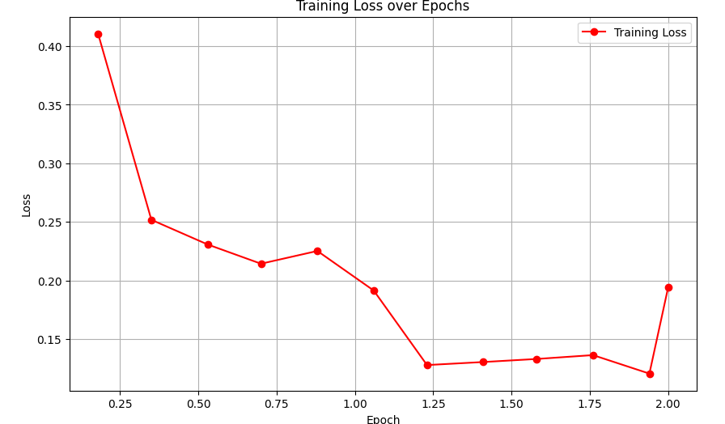

Toxic Comments Classifier
Project Overview
An NLP-based system that automatically detects and classifies toxic comments in online content. Built using DistilBERT, a lightweight transformer model, the system efficiently processes and classifies text while maintaining high accuracy. The project demonstrates the practical application of transformer models in content moderation.
Training Performance

Model training showed consistent improvement, with the loss decreasing from 0.41 to 0.12. The implemented cosine learning rate schedule helped optimize convergence while preventing overfitting.
Technical Implementation
Model Architecture
- DistilBERT-based sequence classification
- Mixed-precision training support
- Dynamic input padding
- Optimized tokenizer implementation
Training Pipeline
- Dataset balancing for improved performance
- Cosine learning rate schedule
- Weight decay for regularization
- Custom metrics computation
Deployment Features
- GPU acceleration support
- Efficient batch processing
- Memory optimization
- Real-time inference capabilities
Implementation Examples
Model Training Configuration
training_args = TrainingArguments(
output_dir="./results",
learning_rate=2e-5,
warmup_ratio=0.1,
lr_scheduler_type="cosine",
fp16=True,
num_train_epochs=2,
weight_decay=0.01
)Inference Pipeline
def predict_toxicity(text, model, tokenizer):
inputs = tokenizer(text, return_tensors="pt", truncation=True)
with torch.no_grad():
logits = model(**inputs).logits
predicted_class = logits.argmax().item()
return model.config.id2label[predicted_class]